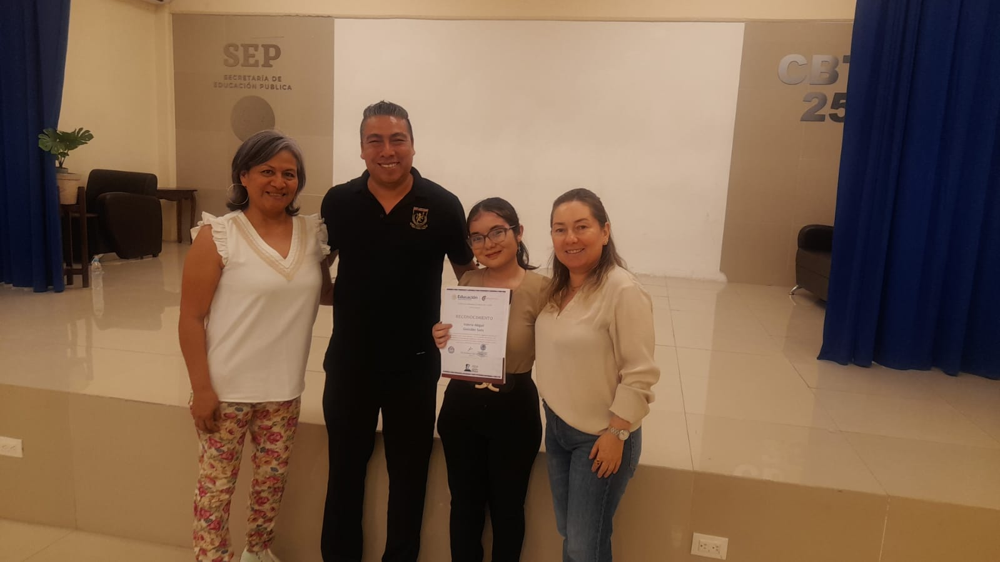
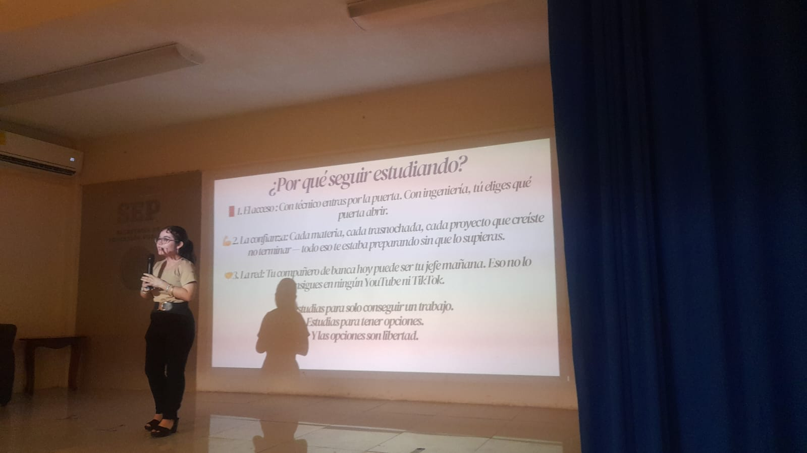
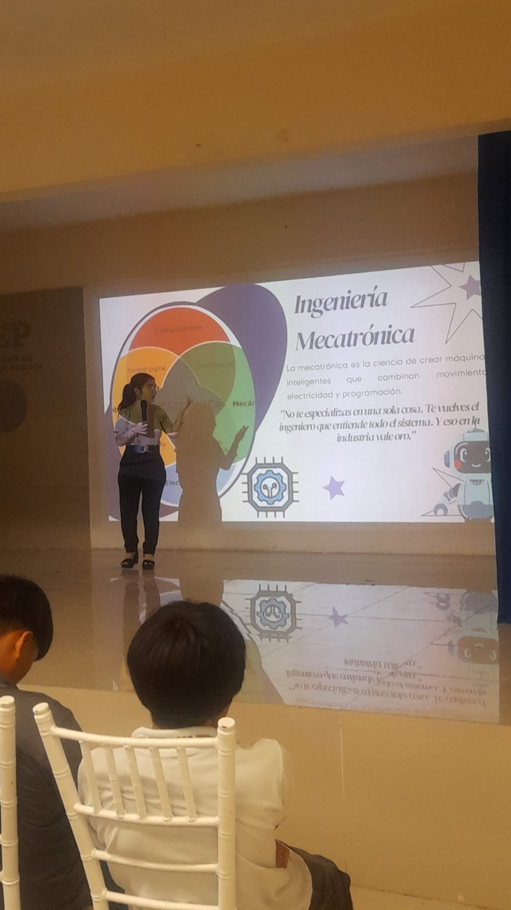

Blog
Próximamente compartiré aquí artículos sobre automatización, desarrollo de software y los proyectos en los que estoy trabajando. Este es el primer tema que viene:



Lo que aprendí dando la ponencia de motivación a estudiantes de prepa técnica.
Hace unas semanas tuve la oportunidad de regresar a las aulas, pero esta vez del otro lado: como ponente. Fui invitada al CBTIS para dar una charla de orientación vocacional a estudiantes de preparatoria técnica, con el objetivo de platicarles sobre las carreras de ingeniería y, sobre todo, de motivarlos a seguir estudiando.
Empecé la conferencia hablando de algo que sé que muchos de ellos sienten en algún momento: la duda de si vale la pena seguir estudiando, el cansancio, o simplemente no saber qué carrera elegir. Yo siempre supe que quería estudiar, y quise usar esa certeza como punto de partida para mostrarles que, aunque el camino no siempre es igual para todos, sí es posible encontrar algo que te apasione y sostenga esa motivación en el tiempo.
A partir de ahí, les compartí mi trayectoria académica y profesional: cómo decidí estudiar Ingeniería Mecatrónica, los retos que enfrenté en el camino, y cómo esa decisión me llevó a proyectos que hoy me llenan de orgullo —desde automatizar sistemas en la industria hasta desarrollar soluciones de software. Hablamos de lo que significa formar parte del grupo de excelencia académica de los 100 mejores estudiantes de FIME, no como algo inalcanzable, sino como el resultado de constancia y disciplina.
Lo que más me emocionó fue ver cómo, conforme avanzaba la plática, los chicos empezaban a hacer preguntas, a compartir sus propias dudas sobre qué estudiar o si estudiar siquiera valía la pena. Hablamos de que la ingeniería no es un solo camino, sino un mundo de posibilidades: automatización, desarrollo, diseño, gestión de proyectos. Que no tienes que tenerlo todo resuelto a los 18 años, pero que vale la pena intentarlo.
Al final de la sesión, varios estudiantes se acercaron a platicarme que la charla los había motivado a seguir adelante con sus estudios, algunos incluso decididos a explorar carreras de ingeniería que antes no habían considerado. Fue un recordatorio de lo poderoso que puede ser compartir nuestra propia historia para que alguien más encuentre la motivación que necesitaba.